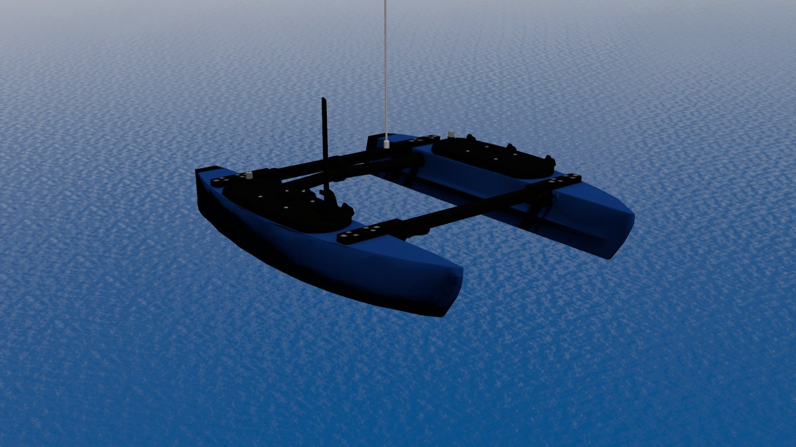

BlueBoat and BlueROV2

The BlueBoat on the open water world.
The Blue Robotics vehicles from bluerobotics_models run on this ocean too. Build that repository in the same workspace:
cd ~/maritime_ws/src
git clone https://github.com/HonuRobotics/bluerobotics_models.git
cd ~/maritime_ws
rosdep install --from-paths src --ignore-src -y
colcon build --merge-install
source install/setup.bash
Each vehicle keeps its floating volume on a link of its own
(hull_displacement for the boat, buoyancy_displacement for the ROV),
so that its many other collision shapes (brackets, thrusters, sensors) don’t
add buoyancy. With those collisions marked gz:buoyancy="true", the
vehicles float on this ocean as they are, and their own launch files bring
them up on it: each takes world:=, and open_water.sdf is a world like
any other. Their propellers take the same normalized command as the custom
USV, on /<name>/motor_<side>/cmd.
Note
This page is written against two bluerobotics_models changes that are in review at the time of writing: the marks (#57), without which the vehicles sink on this world, which names nobody; and the instance name (#59), which the spawn commands below need. Until they merge, build the branches of those pull requests.
BlueBoat
ros2 launch blueboat_gazebo sim.launch.xml \
world:=$(ros2 pkg prefix --share kai_gazebo)/worlds/open_water.sdf
Gazebo opens on the ocean with the boat floating at its waterline, its
bridge and robot_state_publisher running. Its topics
(/blueboat/motor_port/cmd, /blueboat/ping/range, …) and the
config_file:= argument for a custom loadout are described in the
bluerobotics_models documentation; gui:=false runs it headless.
BlueROV2
ros2 launch bluerov2_gazebo sim.launch.xml \
world:=$(ros2 pkg prefix --share kai_gazebo)/worlds/open_water.sdf
The ROV drops in from half a metre up. It is trimmed almost exactly neutral (2 g of net buoyancy), so it settles under the surface and stays roughly where it stopped.
Several vehicles on one ocean
Several vehicles on one ocean walks through
the demo that puts both of them next to the X500. The mechanism, in short:
each of those launch files starts its own Gazebo, so they can’t be
combined. To share one ocean, start the simulation part once, then add each
vehicle with gz-maritime’s spawn launch
(Spawn and drive). The Blue Robotics
vehicles generate their files with a script of their own,
configure_vehicle.py, so the launch is given that script (generator:=)
instead of a model xacro: it runs it with --name and --out-dir and
spawns what it wrote. Each step in its own terminal, all sourced; a spawn
command returns once its vehicle is in.
Terminal 1, the ocean:
ros2 launch kai_bringup simulation.launch.xml
Terminal 2, the BlueBoat:
ros2 launch kai_bringup spawn_vehicle.launch.xml name:=blueboat \
generator:="$(ros2 pkg prefix blueboat_gazebo)/lib/blueboat_gazebo/configure_vehicle.py --config $(ros2 pkg prefix --share blueboat_description)/config/blueboat.yaml"
Terminal 3, the BlueROV2, 5 m away and half a metre up:
ros2 launch kai_bringup spawn_vehicle.launch.xml name:=bluerov2 x:=5 z:=0.5 \
generator:="$(ros2 pkg prefix bluerov2_gazebo)/lib/bluerov2_gazebo/configure_vehicle.py --config $(ros2 pkg prefix --share bluerov2_description)/config/bluerov2.yaml"
Terminal 4, the custom USV next to them:
ros2 launch kai_bringup spawn_vehicle.launch.xml name:=custom_usv y:=-4 \
xacro:=$(ros2 pkg prefix --share kai_custom_vehicle)/models/custom_usv/model.sdf.xacro \
bridge:=$(ros2 pkg prefix --share kai_custom_vehicle)/config/ros_gz_bridge.yaml.in \
urdf:=$(ros2 pkg prefix --share kai_custom_vehicle)/urdf/custom_usv.urdf.xacro
Every vehicle gets its own topics under its name, its own bridge and state
publisher in its namespace and its own TF prefix, and /clock has one
publisher: the launch drops the clock entry the Blue Robotics bridge configs
carry. A second BlueBoat is the same command with another name.